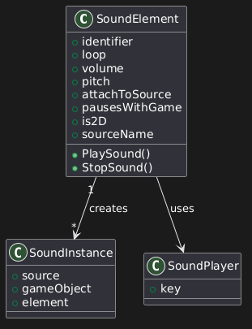
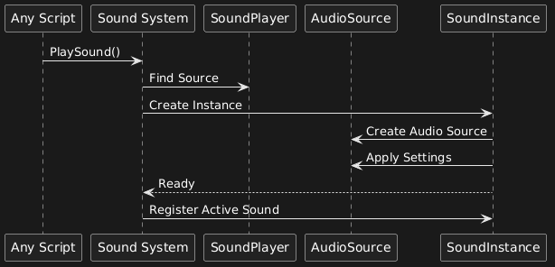

|
|
"YOU CALLED, WE ANSWERED! BUT... MAYBE WE SHOULDN'T HAVE..." |
|
|
"YOU CALLED, WE ANSWERED! BUT... MAYBE WE SHOULDN'T HAVE..." |
|
 |
The SoundElement ScriptableObject is the core of our Sound System. A SoundElement is an object used to create reusable instances of audio clips, with a complete set of configurable settings, as well as directives on how it should play in the level. Any moving object using this system needs to have a SoundPlayer component attached, used to hold a 'Key' string. This key is used to attach the Sound Instance to the moving audio source. SoundInstance objects are created every time a sound is played. They hold an Audio Source component, and are used to give the right settings and variables to that Audio Source. They are also used to destroy the Audio Source once the sound is done playing. |

Playing a sound is quite trivial as it can be done from anywhere and at any time, only requiring the use of a single Function.
We just need to call 'PlaySound' and give it a SoundElement and an optional Transform as the only parameters.
Once the function is called, we look for a potential 'SoundPlayer' audio source. If one is found, the 'SoundInstance' will be set as a child of the source object. Otherwise, it will fall back to the Transform parameter. If no Transform is given either, the sound will attach to the player's camera.
Once the source and position are found, a SoundInstance object is instantiated. The object then takes care of the rest, it plays the sound with the given parameters, and it destroys itself once finished.
This process can be used as many times as needed, and can overlap with no issues.
Thank you for reading all the way through!
Click the link below to go back to the HOME Page.
|
PHONE: 0493 18 36 61 |
PAGE SOURCE |